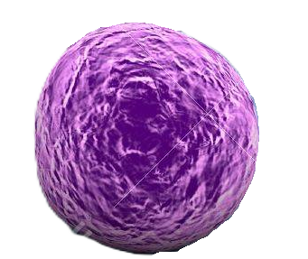
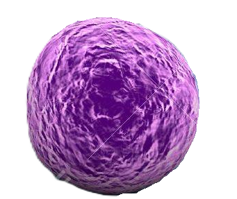

Descripción microbiológica
Staphylococcus aureus es un coco grampositivo de 0.5-1.5 µm de diámetro, que se agrupa en racimos irregulares (del griego "staphyle" = racimo de uvas). Presenta una pared celular con ácido teicoico y peptidoglicano grueso (50-60 capas), además de una cápsula polisacárida variable. Es aerobio facultativo, catalasa-positivo y coagulasa-positivo (clave para su identificación). Las colonias en agar sangre son doradas (debido a pigmentos carotenoides como el estafiloxantina), convexas y de 2-4 mm tras 24 horas a 37°C. Produce biofilm mediante el polisacárido de adhesión intercelular (PIA).
Características distintivas
- Tinción: Gram-positivo en racimos, no esporulado, no flagelado.
- Metabolismo: Fermenta manitol (agar Mannitol Salt) y produce DNasa.
- Resistencias: Cepas MRSA (resistente a meticilina) con PBP2a alterada.
- Factores de virulencia: >40 proteínas identificadas (toxinas, adhesinas, evasinas).
Ecología y transmisión
Coloniza el 30% de la población humana como comensal en narinas anteriores, axilas y periné. Sobrevive meses en superficies inertes (teléfonos, batas médicas) debido a su resistencia a la desecación. Se transmite por contacto directo (piel-piel) o indirecto (fómites), siendo causa frecuente de infecciones nosocomiales. Reservorios animales incluyen ganado bovino (cepas productoras de leucocidina Panton-Valentine). Factores de riesgo para infección incluyen diabetes, VIH, uso de catéteres y procedimientos invasivos.
Factores ambientales
- Supervivencia: Resiste hasta 15 días en superficies secas, 60°C durante 30 minutos.
- pH óptimo: 7.0-7.5, pero tolera rangos de 4.2-9.3.
- Biocidas: Sensible a hipoclorito (1%), pero resistente a muchos amonios cuaternarios.
Mecanismos de patogenicidad
Su virulencia deriva de múltiples factores:
| Factor | Mecanismo | Efecto clínico |
|---|---|---|
| α-toxina (hla) | Forma poros en membranas | Necrosis tisular |
| Protein A (spa) | Se une a Fc de IgG | Evasión inmune |
| TSST-1 | Superantígeno | Shock tóxico |
Enfermedades clínicas
- Infecciones cutáneas: Forúnculos, abscesos, celulitis (80% de casos).
- Infecciones invasivas: Neumonía necrotizante, endocarditis, osteomielitis.
- Síndromes toxínicos: Shock tóxico (fiebre, hipotensión, rash), intoxicación alimentaria (enterotoxinas A-E).
- Resistencia: MRSA (meticilina), VRSA (vancomicina), resistencia intermedia (VISA).
Diagnóstico y tratamiento
Métodos diagnósticos incluyen:
- Tinción de Gram y cultivo (agar sangre + agar CHROMagar MRSA).
- Pruebas rápidas (PCR para gen mecA, aglutinación con látex para coagulasa).
- Antibiograma (CLSI/EUCAST) para detectar resistencias.
Opciones terapéuticas según sensibilidad:
- MSSA: Oxacilina, cefazolina (95% efectividad).
- MRSA: Vancomicina (monitorizar CMI), daptomicina, linezolid.
- Infecciones cutáneas: Drenaje quirúrgico + doxiciclina/TMP-SMX.
Prevención y control
- Higiene: Lavado de manos con alcohol-glicerina (70%), desinfección de superficies.
- Detección: Tamizaje nasal preoperatorio (PCR/ cultivo) en pacientes de riesgo.
- Decolonización: Mupirocina nasal + clorhexidina al 4% en portadores.
- Vigilancia: Programas de stewardship antimicrobiano en hospitales.
Datos epidemiológicos
- Causa ~500,000 infecciones/año en EE.UU. (20% MRSA).
- Responsable del 15% de infecciones asociadas a dispositivos médicos.
- Mortalidad por bacteriemia MRSA: 20-40% a pesar de tratamiento.